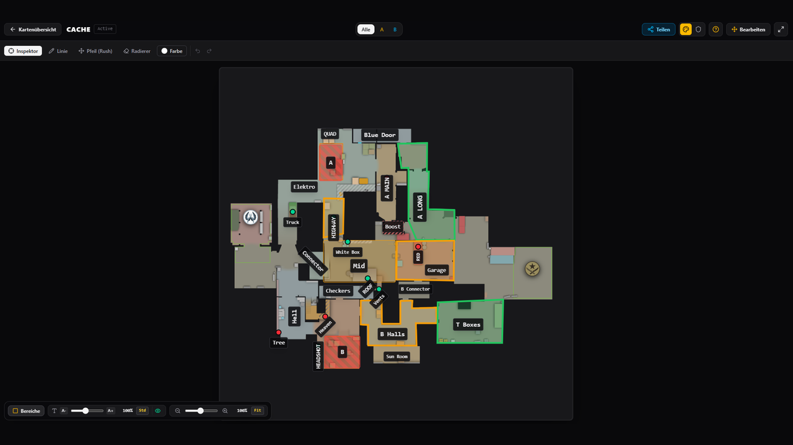
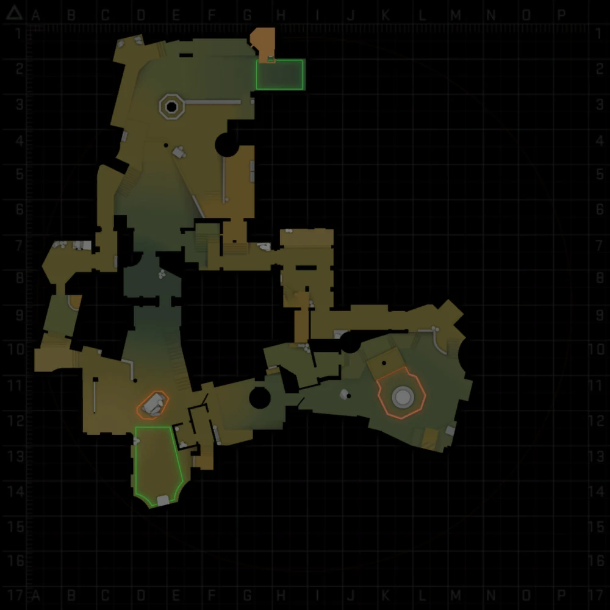
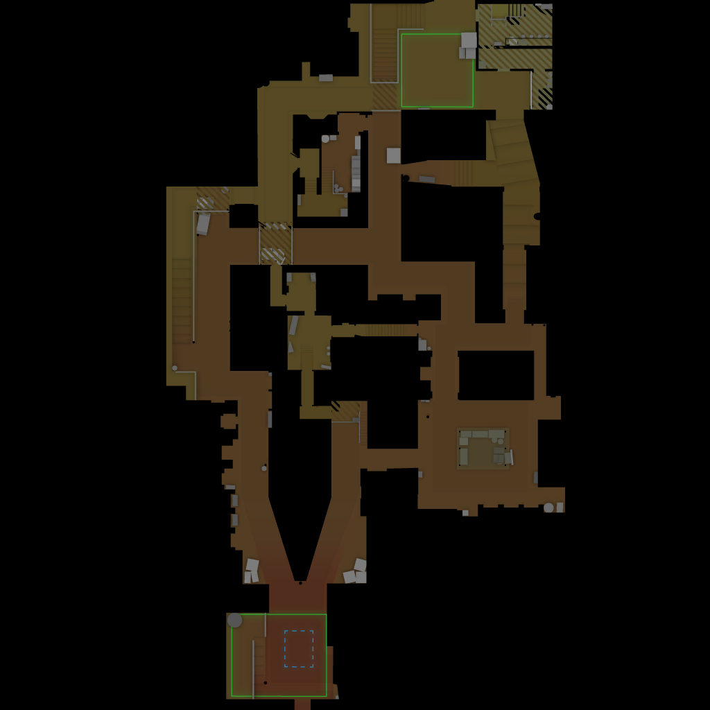
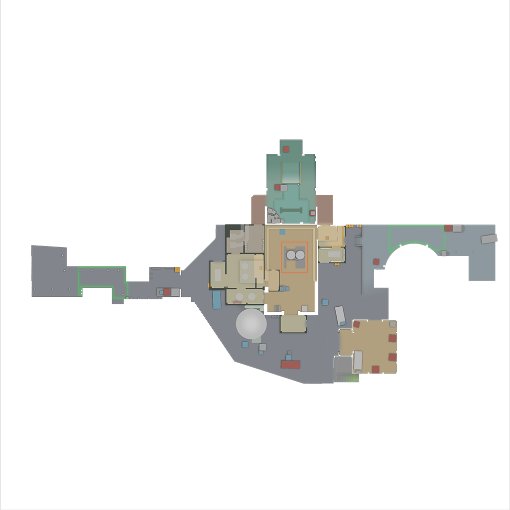

CS2 Callout-Quiz & 40s-C4-Challenge
5 Quiz-Modi: 5 Fragen, 10 Fragen, Alle Callouts, Schwachstellen-Training (Spot wird erst nach 3 fehlerfreien Antworten am Stück entfernt) sowie die schnelle 40-Sekunden-C4-Challenge mit Highscore.
Alle wichtigen Counter-Strike 2 Callouts im interaktiven Quiz lernen (inkl. 40-Sekunden-C4-Challenge und Schwachstellen-Modus), Smokes & Utility einzeichnen und fertige Team-Taktiken mit 1 Klick als Discord-PNG speichern.

5 Quiz-Modi: 5 Fragen, 10 Fragen, Alle Callouts, Schwachstellen-Training (Spot wird erst nach 3 fehlerfreien Antworten am Stück entfernt) sowie die schnelle 40-Sekunden-C4-Challenge mit Highscore.
Zeichne Laufwege, CT-Setups, T-Executes und Spielerpositionen direkt auf das Radar, speichere Team-Presets und exportiere ein fertiges Taktik-Bild inklusive Legende für Discord.
Platziere exakte 2-Punkt-Wurflinien für Smokes, Flashes, Molotovs und HE-Granaten – wahlweise als Linksklick, Rechtsklick, Jumpthrow oder Run+Jumpthrow.

Umfassende Cobblestone-Callouts für schnelle Splits über Drop, Mid und B-Main.

Perfekt für A-Executes (Stairs, Jungle, CT Smoke), Window-Smokes und Mid-Control.

Alle klassischen Spots von Long Doors bis B-Tunnel – ideal für Xbox-Smokes & Callout-Drills.

42 präzise Callouts für Banana-Utility, B-Executes und A-Apartments / Pit.

Neu vermessenes CS2-Italy-Radar mit 14 klaren Haupt-Callouts für Quiz & Taktik-Runden.

Inklusive Ebenenwechsel für Nuke, Train & Vertigo sowie Ancient, Anubis, Overpass, Cache und 2v2-Karten.
Ja. CS2Freitag lässt sich als Progressive Web App (PWA) auf Smartphone, Tablet und PC installieren und speichert Karten, eigene Callouts und Taktiken lokal sowie optional über Cloud-Sync.
Ja. Jede Taktik lässt sich per Link/JSON teilen, in der Cloud sichern oder direkt als übersichtliches PNG-Bild inklusive Legende für Discord herunterladen.